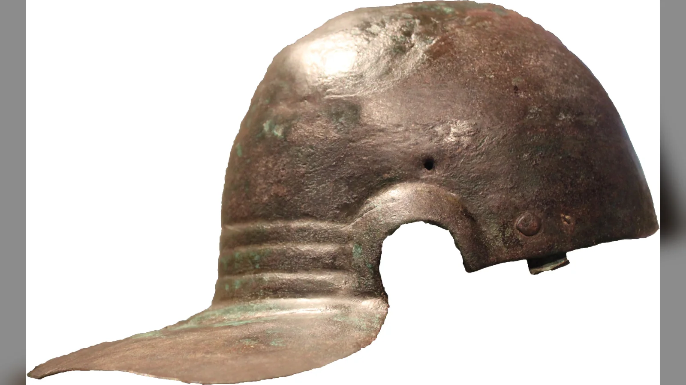
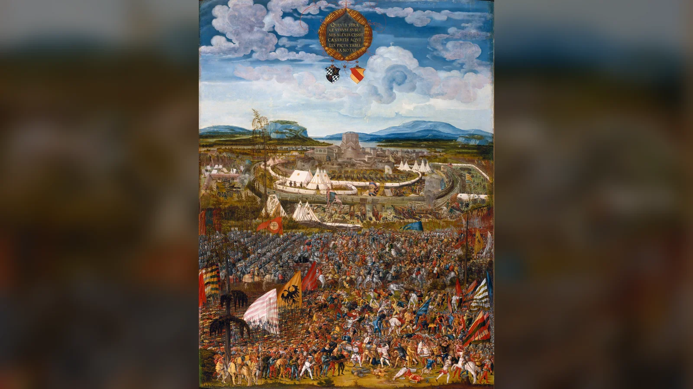

MÖ 216 yazında Cannae'de Roma'nın başına gelenler, "yenilmez Roma lejyonu" fikriyle pek uyuşmaz. Hannibal'ın ordusu Roma kuvvetlerini kuşattı ve antik kaynakların rakamları tartışmalı olsa da Cumhuriyet, tek bir günde tarihinin en ağır askerî felaketlerinden birini yaşadı. Konsül Lucius Aemilius Paullus öldü, senatörler ve yüksek rütbeli subaylar kaybedildi, İtalya'daki bazı müttefikler Roma'dan koptu. Böyle bir yenilgi başka bir devlet için savaşın sonu olabilirdi. Roma ise barış istemedi. Yeni askerler topladı, müttefik ağını ayakta tutmaya çalıştı, savaşın coğrafyasını genişletti ve yıllar sonra Scipio'nun ordusu Zama'da Hannibal'ı yenene kadar mücadeleyi sürdürdü.
Roma ordusu neden bu kadar güçlüydü sorusunun cevabı tam da burada başlar. Romalı askerlerin doğuştan daha cesur olması, gladiusun rakipsiz bir silah olması veya lejyonlarda kusursuz bir "demir disiplin" bulunması Roma'nın yüzyıllar süren askerî başarısını açıklamaz. Roma ağır yenilgiler aldı; komutanları hata yaptı, askerleri kaçtı, birlikleri isyan etti, lejyonları bütünüyle yok edildi. Buna rağmen özellikle Cumhuriyet'in genişleme çağında Roma, kaybettiği orduların yerine yenilerini çıkarabilecek insan gücüne, bunu finanse edecek siyasi yapıya, İtalya'daki müttefiklerden asker sağlayacak ilişkilere ve uzun savaşları sürdürebilecek örgütlenmeye sahipti.
Lejyonun savaş alanındaki etkinliği de tek bir unsurdan doğmadı. Eğitim, küçük birliklerin komutası, silahların formasyon içinde kullanılması, yardımcı birliklerin sağladığı süvari ve menzilli savaş kapasitesi, ikmal, düzenli kamp kurma, yollar, köprüler, tahkimatlar ve düşmandan öğrenme alışkanlığı birbirini tamamlıyordu. Roma'nın asıl üstünlüğü, bunların hiçbirini tek başına mucize olarak görmemesinde aranmalıdır. İyi bir silah kötü ikmal edilen bir orduyu kurtaramaz; disiplinli piyade uygun süvari desteği olmadan açık arazide felakete uğrayabilir; güçlü bir lejyon aç kaldığında hareket edemez. Roma askerî sistemi başarılı olduğu dönemlerde bu parçaları aynı savaş makinesinin unsurları hâline getirebildi.
Fakat "Roma ordusu" derken de dikkatli olmak gerekir. MÖ 4. yüzyıldaki yurttaş ordusu, Caesar'ın MÖ 1. yüzyıldaki lejyonları, Augustus'un sınır garnizonları ve MS 4. yüzyılın hareketli saha orduları aynı kurumun değişmeyen kopyaları değildi. Yaklaşık bin yıllık Roma askerî tarihinde teşkilat, asker alma, hizmet süresi, silahlar, komuta ve devletle ordu arasındaki ilişki sürekli değişti. Bu yüzden lejyonların başarısını anlamanın ilk şartı, Roma'nın tek bir mükemmel ordu modeli keşfetmediğini; gerektiğinde kendi ordusunu değiştirmeyi öğrendiğini kabul etmektir.
Roma Ordusu Her Dönemde Aynı mıydı?
Roma'nın erken askerî tarihi, daha sonraki çağların kaynakları tarafından geçmişe doğru yeniden anlatıldığı için özellikle sorunludur. Livy gibi yazarlar krallık ve erken Cumhuriyet dönemini kendi çağlarından yüzyıllar sonra kaleme aldılar. Servius Tullius'a bağlanan nüfus sınıfları ve askerî yükümlülük düzenlemeleri bu nedenle bütünüyle uydurma kabul edilmek zorunda değildir, fakat ayrıntılarını çağdaş bir askerî yönetmelik gibi okumak da güvenli değildir. Erken Roma ordusunun yurttaşların servet, yaş ve siyasi statüleriyle bağlantılı askerlik yükümlülüğüne dayandığı genel çerçeve daha sağlamdır.
Cumhuriyet genişledikçe savaşın ölçeği ve süresi değişti. Geleneksel anlatıda erken dönemin daha yoğun falanks benzeri düzeninden manipüler lejyonun daha esnek yapısına geçildiği kabul edilir; fakat bunun tek bir reformcunun kararıyla veya belirli bir muharebenin ertesi günü gerçekleştiğini gösterecek kanıt yoktur. MÖ 3. ve 2. yüzyıllarda Polybios'un ayrıntılı biçimde anlattığı ordu, yurttaş lejyonları ile İtalyan müttefik birliklerinin birlikte savaştığı, manipüller ve yaş/servet sınıflarıyla örgütlenen bir sistemdi. Bu ordu Pön Savaşları gibi olağanüstü uzun çatışmalarda değişime uğramaya devam etti.
Geç Cumhuriyet'te uzun seferler, denizaşırı eyaletler ve iç savaşlar askerliği giderek daha sürekli bir mesleğe yaklaştırdı. Topraksız yurttaşların orduya alınması, gönüllü hizmetin artması, kohortun temel taktik birim olarak öne çıkması ve askerlerin komutanlarıyla kurduğu maddi-siyasi bağlar bir dönüşümün parçalarıydı. Popüler anlatı bunların tamamını "Marius reformları" adı altında MÖ 107'ye yerleştirir. Marius gerçekten önemliydi; özellikle Jugurtha Savaşı sırasında mülkiyet şartlarını karşılamayan gönüllüleri kabul etmesi antik kaynaklarda yer alır. Fakat kohortun yaygınlaşmasını, bütün teçhizat sistemini, profesyonelleşmeyi ve sonraki imparatorluk ordusunu tek kişinin bir kerede icat ettiği fikri modern araştırmada fazla şematik görülür.
Augustus iç savaşlardan sonra çok daha kalıcı bir askerî düzen kurdu. Lejyon sayısı azaltıldı, uzun süreli hizmet ve düzenli terhis sistemi kurumsallaştırıldı, birlikler sınır bölgelerinde kalıcı üslerde konuşlandırıldı ve askerî hazine gibi mali düzenlemeler geliştirildi. Principatus ordusu bu anlamda Cumhuriyet'in yıllık yurttaş seferberliklerinden farklı, uzun hizmetli bir daimi kuvvetti. Yine de bu ordu da yüzyıllar boyunca aynı kalmadı. MS 3. ve 4. yüzyıllardaki siyasi krizler, yeni düşmanlar ve geniş sınırların savunulması daha hareketli saha birlikleri ile sınır kuvvetlerinin farklılaşmasına yol açtı. Roma'nın askerî başarısının sırlarından biri tam olarak buydu: gelenek önemliydi, fakat gelenek değişime engel olmak zorunda değildi.
Roma'nın İnsan Gücü Neden En Büyük Avantajlarından Biriydi?
Roma'nın erken ve orta Cumhuriyet dönemindeki en büyük askerî avantajlarından biri tek tek lejyonların kalitesinden önce, kaybedilen insanların yerine yenilerini koyabilme kapasitesiydi. Roma İtalya'yı fethederken her mağlup topluluğu aynı biçimde yönetmedi. Bazılarına yurttaşlık verildi, bazıları Latin statüsü veya farklı anlaşmalarla bağlandı, çok sayıda topluluk socii olarak Roma'ya asker sağlamakla yükümlü hâle geldi. Bu karmaşık sistem eşit bir federasyon değildi; Roma merkezli bir hiyerarşiydi. Fakat askerî açıdan olağanüstü bir insan havuzu oluşturdu.
Polybios'un MÖ 225 dolaylarında Roma ve müttefiklerinin seferber edebileceği insan gücüne ilişkin verdiği büyük rakamlar tam modern istatistikler gibi kullanılamaz. Yine de temel gerçek açıktır: Roma'nın askerî tabanı yalnız kentte yaşayan Roma yurttaşlarından oluşmuyordu. Latinler ve İtalyan müttefikler ordulara büyük sayıda piyade ve süvari sağlıyordu. Bu nedenle "Roma lejyonu" denildiğinde savaş alanındaki Roma gücünün tamamını yalnız yurttaş lejyonerlerle özdeşleştirmek Cumhuriyet ordusunun yarısını görünmez kılabilir.
Pyrrhos'la savaşlarda bu sistemin dayanıklılığı erkenden görüldü. Epeiros kralı Pyrrhos Heraclea ve Asculum gibi muharebelerde Romalılara ağır kayıplar verdirdi, ancak Roma barışa zorlanmadı. "Pyrrhos zaferi" kavramının ardındaki mantık da budur: Pyrrhos'un kayıplarını yenileme imkânı Roma'nınkinden daha sınırlıydı. Bu anlatının antik edebiyatta dramatize edildiği unutulmamalıdır, fakat stratejik dengesizlik gerçektir. Roma, İtalya içindeki insan ve müttefik ağından yeni kuvvetler çıkarabiliyordu.
İkinci Pön Savaşı bu kapasiteyi çok daha sert biçimde sınadı. Trebia, Trasimene ve özellikle Cannae'de ordular kaybedildi. Hannibal'ın zaferleri Roma'nın askerî taktiklerinin kusursuz olmadığını gösterdiği gibi bazı İtalyan müttefikleri de Kartaca tarafına çekti. Buna rağmen müttefik sisteminin bütünü çözülmedi. Orta İtalya'daki önemli toplulukların sadakati, Roma'nın yeni lejyonlar kurmasına ve aynı anda farklı cephelerde savaşmasına imkân verdi. Roma Hannibal'ı hemen yenmek zorunda değildi; onu yıllarca savaşmaya zorlayabilecek insan ve siyasi dayanıklılığa sahip olması yeterliydi.
Bu nedenle Roma'nın başarısını "askerleri daha cesurdu" diye açıklamak yetersizdir. Cannae'de Roma askerleri kuşatılıp öldürüldü; Carrhae'de lejyonerler Part atlı okçuları karşısında çaresiz kaldı; Teutoburg'da üç lejyon yok edildi. Sistemik üstünlük, tek askerin biyolojik veya kültürel üstünlüğünde değil, devletin savaşma kapasitesini yeniden üretmesindeydi. Cumhuriyet'in en güçlü döneminde Roma, yenilginin maliyetini rakiplerinden daha uzun süre taşıyabiliyordu.
Manipüler Lejyon Roma'ya Nasıl Esneklik Sağladı?
Roma'nın erken dönem ordusunun falanks benzeri düzenden manipüler sisteme nasıl geçtiği kesin değildir. Antik gelenek değişimi Samnitlerle yapılan savaşlar ve İtalya'nın engebeli arazisiyle ilişkilendirmeye elverişlidir; modern tarihçiler ise bu dönüşümün uzun ve eksik belgelenmiş bir süreç olduğunu vurgular. "Romalılar falanksla bir kez yenildi, ertesi gün manipülü icat etti" biçiminde anlatılabilecek bir reform yoktur. Yine de Polybios'un MÖ 2. yüzyılda tarif ettiği manipüler lejyon, Helenistik falankslardan farklı bir taktik mantığa sahipti.
Polybios'un şemasında ağır piyadenin genç hastati, daha deneyimli principes ve yaşlı triarii hatları bulunuyordu; velites hafif piyade olarak ön hatta ve boşluklarda görev yapıyordu. Her hat daha küçük manipüllere ayrılmıştı. Bu yapı, ordunun tek bir devasa piyade bloğu yerine alt birimlerle hareket etmesini kolaylaştırıyordu. Engebeli arazide bütün hattın kusursuz biçimde düz kalması gerekmediği için yerel bozulmalar ordunun tamamını aynı anda felce uğratmayabiliyordu. Komutanlar yedek hatları devreye sokabilir, yorgun veya baskı altındaki birlikleri destekleyebilirdi.
Bunu "lejyon falankstan her koşulda üstündü" şeklinde okumak hatalıdır. Makedon sarissa falanksı uygun arazide ve kanatları korunduğunda korkutucu bir cephe gücü oluşturabiliyordu. Cynoscephalae ve Pydna gibi Roma zaferleri, falanksın yapısal sınırlarını gösterse de sonuçları arazi, komuta, destek birlikleri ve savaşın gelişimiyle birlikte değerlendirmek gerekir. Roma sisteminin önemli avantajı, savaş alanındaki düzensizliği daha küçük birimlerle yönetebilmesiydi.
Manipüler düzen aynı zamanda Roma'nın kurumsal öğrenme kapasitesinin örneğidir. Roma ordusu İtalya'daki farklı savaş tarzlarıyla karşılaştıkça ekipman ve teşkilatını uyarladı. Bu sistem de sonsuza kadar korunmadı. MÖ 2. yüzyılın sonları ve 1. yüzyılda kohort daha belirgin taktik birim hâline geldikçe eski hastati-principes-triarii ayrımları ortadan kalktı. Roma'nın gücü manipülü bulup ona sonsuza kadar bağlı kalmak değil, manipül artık ihtiyaçları karşılamadığında başka bir yapıya geçebilmekti.
Kohort Sistemi Neden Önemliydi?
Kohort, manipülden daha büyük bir birlikti ve geç Cumhuriyet'e doğru lejyonun temel taktik alt birimi hâline geldi. Geleneksel şemada bu değişim doğrudan Marius'a bağlanır. Oysa kohortların Marius'tan önce de kullanıldığına dair kanıtlar vardır ve dönüşümün uzun süre içinde gerçekleştiği görülür. Marius'un savaşları bu gelişmenin önemli aşamalarından biri olabilir; onu "kohortun mucidi" yapmak gerekmez.
Daha büyük bir alt birimin avantajı komuta ve sevk kolaylığıydı. Manipüler lejyondaki çok sayıda küçük birim yerine kohortlar, komutanın ordunun parçalarını farklı görevler için ayırmasını kolaylaştırıyordu. Caesar'ın Galya seferlerinde kohortların kaleleri savunurken, yürüyüş kollarını korurken, ani tehditlere karşı çevrilirken veya bağımsız görevlerde kullanıldığını görürüz. Caesar'ın kendi anlatısının siyasi öz sunum niteliği taşıdığı unutulmamalıdır, fakat kullandığı askerî terminoloji geç Cumhuriyet ordusunun işleyişi hakkında önemli bilgi verir.
Kohort sistemi ayrıca lejyon içindeki eski servet ve yaş sınıflarının kaybolduğu daha homojen ağır piyade yapısıyla uyumluydu. Bu da ordunun profesyonelleşmesiyle aynı geniş dönüşümün parçasıdır. Ancak profesyonelleşme kelimesi dikkatli kullanılmalıdır. Geç Cumhuriyet'te zorunlu asker alma devam etti; bütün askerler bir anda kariyer profesyoneline dönüşmedi. Augustus döneminde uzun hizmetli daimi ordunun kurumsallaşması, Marius'un çağından sonraki onlarca yıllık siyasi ve askerî değişimin sonucuydu.
Buradaki asıl ders yine tek reformcu efsanesinden daha değerlidir. Roma ordusu, uzun savaşların ve uzak cephelerin ihtiyaçları doğrultusunda daha kullanışlı bir alt birim ölçeğine yöneldi. Kohort, hem savaş alanında hem de garnizon ve sefer görevlerinde yeterince büyük, fakat bütün lejyonu hareket ettirmeyi gerektirmeyecek kadar küçük bir araç sundu.
Lejyonların Eğitimi Gerçekten Ne Kadar Ağırdı?
Roma askerî eğitiminin ünü büyük ölçüde antik yazarların Romalıların savaşa hazırlanma konusundaki ısrarını vurgulamasından gelir. Josephus, erken İmparatorluk döneminin Roma askerlerini anlatırken eğitimlerini "kansız savaşlar", savaşlarını ise "kanlı talimler" gibi sunar. Vegetius ise yürüyüş, silah kullanımı, kazı ve fiziksel dayanıklılık üzerine ayrıntılı tavsiyeler verir. Fakat Vegetius Geç Antik Çağ'da, muhtemelen MS 4. sonu veya 5. yüzyılda yazdı ve geçmişteki ideal uygulamaları kendi çağının sorunlarına çözüm olarak derledi. Onu Caesar döneminin günlük eğitim programını kaydeden çağdaş bir subay gibi kullanmak yanlıştır.
Yine de farklı kaynaklar ve askerî pratiğin kendisi, tekrarın Roma ordusunda temel olduğunu gösterir. Asker yalnız kılıç kullanmayı öğrenmiyordu. Formasyonu bozmadan yürümek, komutları tanımak, silahları taşımak, hendek kazmak, set oluşturmak, nöbet tutmak ve kamp düzenini bilmek gerekiyordu. Bu becerilerin değeri tek tek bakıldığında sıradan görünebilir. Savaş alanında ise binlerce kişinin korku, gürültü ve yorgunluk altında aynı komutlara tepki vermesini sağlayan şey tam olarak bu tekrarın yarattığı alışkanlıktı.
Yürüyüş mesafeleri konusunda popüler rakamlar dikkatle ele alınmalıdır. Antik kaynaklarda belirli eğitim yürüyüşleri veya orduların belirli günlerde katettiği mesafeler vardır; bunlardan "her Roma askeri her gün tam 30 kilometre yürürdü" gibi evrensel bir kural çıkmaz. Arazi, hava, düşman tehdidi, yük, ordunun büyüklüğü ve ikmal kolu günlük hızı belirlerdi. Hızlı bir askerî yürüyüş ile büyük bagaj treniyle yapılan normal ilerleme aynı şey değildi.
Roma eğitiminin asıl gücü bireysel kahraman üretmekten çok ortak davranış üretmesiydi. Bir askerin mükemmel kılıç ustası olması yararlıydı; fakat yanındaki adamla aynı çizgide duramıyorsa lejyonun savaş gücü azalırdı. Kamp kazmak veya yürüyüş düzenini korumak gösterişli değildi, fakat seferlerin büyük bölümü tam olarak bu rutin becerilerden oluşuyordu.
Roma Askerî Disiplini Yalnızca Ağır Cezalara mı Dayanıyordu?
Roma disciplina kavramını yalnız kırbaç, infaz ve decimatio üzerinden anlatmak popüler kültürün sevdiği ama eksik bir görüntüdür. Ordu düzeni cezalar kadar komuta zincirine, yeminlere, günlük rutine, terfi umuduna, ödüllere, birlik gururuna ve özellikle imparatorluk döneminde düzenli maaş ile terhis beklentisine dayanıyordu. İnsanlar yalnız korktukları için değil, sistem içinde kazanacakları şeyler bulunduğu için de emirlere uyuyordu.
Centurionlar bu disiplinin günlük yüzlerinden biriydi. Bir centurion yalnız savaşta öne çıkan sert bir adam değildi; birliğin eğitimi, düzeni ve idaresinde rol oynayan tecrübeli bir ara komutandı. Centurionların kendi aralarında kıdem ve statü farkları vardı. Onların birliklerle yakın teması, yüksek komutanlığın emirlerini yüzlerce küçük uygulamaya dönüştürüyordu. Roma komuta sisteminin dayanıklılığı biraz da aristokrat komutanlar değişse bile tecrübeli alt kademelerin bilgi taşıyabilmesinden geliyordu.
Decimatio ise olağan disiplinin sembolü hâline gelmesine rağmen nadirdi. Ağır korkaklık veya toplu itaatsizlik durumunda bir birliğin gruplara ayrılıp yaklaşık her on kişiden birinin ölümle cezalandırılması şeklindeki uygulama antik kaynaklarda özellikle dehşet verici olduğu için kaydedilir. Crassus'un Spartaküs Savaşı sırasında bu cezaya başvurduğu anlatılır. Eğer her lejyonda rutin biçimde uygulansaydı antik yazarlar için böylesine dikkat çekici olmazdı.
Üstelik disiplin her zaman işlemedi. Geç Cumhuriyet'in iç savaşlarında askerler komutanlarından para ve terhis talep etti; imparatorluk döneminde birlikler ayaklandı, imparator ilan etti veya imparator devirdi. Augustus'un ölümünden sonra Ren ve Pannonia ordularındaki isyanlar, uzun hizmetli Roma askerinin otomatik itaat makinesi olmadığını açıkça gösterir. Roma disiplini güçlüydü çünkü kurumlar onu sürekli yeniden üretmeye çalışıyordu; kusursuz olduğu için değil.

Roma Lejyonerlerinin Silahları Neden Etkiliydi?
Roma lejyoneri denildiğinde akla büyük scutum, pilum, kısa gladius ve segmentli zırh gelir. Bu görüntü özellikle erken İmparatorluk dönemi için bazı gerçek unsurlar taşır, fakat bin yıllık Roma ordusunu tek bir üniformaya dönüştürür. Silah ve zırhlar dönem, bölge, birlik ve görevle değişti. Roma askerî başarısını bir "süper silah"la açıklamak da aynı nedenle yanıltıcıdır.
Cumhuriyet ve erken İmparatorluk dönemlerinde ağır piyadenin büyük kalkanı formasyon içinde koruma sağlıyor, pilum yakın temas öncesinde düşman düzenini bozabilecek ağır bir cirit olarak kullanılıyor, gladius ise yakın dövüşte etkili oluyordu. Fakat gladius kendi başına Roma zaferlerinin nedeni değildi. Bir asker kalkan hattının parçası olarak hareket etmeyi, ciridini uygun anda atmayı ve yakın dövüşte çevresindeki birlikle koordinasyonu bilmiyorsa iyi metalden yapılmış kılıcın değeri sınırlı kalır.
Zırh konusunda çeşitlilik daha da belirgindir. Zincir zırh lorica hamata uzun süre kullanıldı; pullu zırh lorica squamata farklı birliklerde görüldü; modern adıyla lorica segmentata özellikle erken İmparatorluk döneminde belirli bağlamlarda kullanıldı. Arkeolojik buluntular segmentli zırhın gerçekliğini gösterir, fakat bütün Roma tarihinin değişmez lejyoner üniforması değildir. Aynı orduda farklı zırh tipleri yan yana bulunabiliyordu.
Daha sonraki dönemlerde uzun spatha yaygınlaştı, kalkan biçimleri ve mızrak kullanımı değişti. Bu değişiklikler Roma ordusunun "eski iyi silahlarını unutması" şeklinde basit bir gerileme hikâyesine indirgenemez. Düşmanlar, savaş alanları ve birlik yapısı değiştikçe ekipman da değişiyordu. Roma silahlarının etkinliği standartlaşma ile esnekliğin birlikte bulunmasından kaynaklandı: ordu büyük miktarda benzer ekipman sağlayabiliyor, ama ihtiyaç değiştiğinde başka silahları benimseyebiliyordu.
Yardımcı Birlikler Olmadan Roma Ordusu Güçlü Olabilir miydi?
Lejyon Roma askerî kimliğinin merkezindeydi, fakat tek başına tam bir ordu değildi. Cumhuriyet döneminde İtalyan müttefikler özellikle süvari ve piyade desteğinde büyük rol oynadı. İmparatorluk döneminde auxilia sistemi, yurttaş lejyonlarının sahip olmadığı veya daha az yoğun sahip olduğu uzmanlıkları düzenli biçimde sağladı. Süvari, okçular, sapancılar, keşif birlikleri ve farklı bölgesel savaş geleneklerinden gelen askerler Roma ordusunun savaş seçeneklerini genişletti.
Batavialı birliklerin nehir geçişleri ve savaşçılıklarıyla ün kazanması, Giritli okçular veya Balear sapancıları gibi bölgesel uzmanlıkların Roma hizmetinde kullanılması bu yaklaşımın örnekleridir. Doğu eyaletlerinden gelen okçu birlikleri özellikle menzilli savaşta önemliydi. Bu askerleri "lejyonu destekleyen ikinci sınıf barbarlar" gibi düşünmek yanlıştır. Erken İmparatorluk döneminde auxilia, devletin düzenli askerî yapısının temel bileşeniydi ve sayısal olarak da çok büyük bir kuvvet oluşturuyordu.
Yardımcı hizmetin siyasi yönü de vardı. İmparatorluk döneminde yurttaş olmayan birçok yardımcı asker, uzun hizmet sonunda kendisi ve belirli dönemlerde ailesi için Roma yurttaşlığı kazanabiliyordu. Askerî diplomalar bu uygulamanın somut kanıtlarıdır. Böylece ordu yalnız sınırları savunmuyor, imparatorluğun farklı topluluklarını Roma devletine bağlayan kurumlardan biri olarak da işliyordu.
Carrhae gibi felaketler, dengeli kuvvet yapısının neden önemli olduğunu tersinden gösterir. Crassus'un MÖ 53'te Partlara karşı ordusu ağır piyade bakımından güçlüydü, fakat hareketli atlı okçular ve zırhlı süvari karşısında uygun taktik ve süvari desteği yetersiz kaldı. Lejyon her sorunun cevabı değildi. Roma'nın başarılı olduğu dönemlerde gücü, lejyonun etrafına ihtiyaç duyulan başka savaş yeteneklerini ekleyebilmesinden geldi.
Roma Ordusunun Lojistik Sistemi Nasıl İşliyordu?
Bir lejyonun savaşa ulaşabilmesi, savaşı kazanabilmesinden önce çözülmesi gereken daha büyük bir problemdi. Binlerce asker her gün yiyecek ve su tüketiyor; atlar, katırlar ve başka yük hayvanları yem istiyor; silahların onarılması, ayakkabıların yenilenmesi, maaşın ulaştırılması ve yaralıların taşınması gerekiyordu. Ordu büyüdükçe bu ihtiyaçlar doğrusal olmaktan çıkarak hareketi belirleyen bir sisteme dönüşüyordu. Roma askerî gücünün en az gladius kadar önemli parçası, bu görünmeyen ikmal düzeniydi.
Tahıl temel askerî gıdalardan biriydi çünkü depolanabilir, ölçülebilir ve büyük miktarlarda taşınabilirdi. Fakat Roma ordusunun beslenmesini yalnız buğday torbalarına indirgemek de doğru değildir. Et, yağ, şarap, bakliyat ve bölgesel ürünler kaynaklara ve arkeolojik buluntulara göre tüketiliyordu. Askerlerin bazen kendi tahıllarını öğütmesi, birliğin gıda hazırlığında aktif rol oynadığını gösterir. Buna rağmen on binlerce kişilik ordunun yiyeceği yalnız askerlerin sırtında taşınamazdı.
Yük hayvanları, arabalar, nehir taşımacılığı ve özellikle uygun cephelerde deniz nakliyatı büyük önem taşıyordu. Bir gemi, kara arabalarının taşıyabileceğinden çok daha büyük yükü daha düşük enerji maliyetiyle hareket ettirebilirdi. Bu nedenle limanlar, nehirler ve depolar stratejinin parçasıydı. Roma'nın Akdeniz üzerindeki hâkimiyeti yalnız donanma zaferleri açısından değil, orduları uzak bölgelere besleyebilmesi açısından da değerliydi.
Cumhuriyet ordularında tedarik yerel satın alma, müttefik katkıları, vergi benzeri yükümlülükler, yağma ve önceden hazırlanmış depoların farklı karışımlarına dayanabiliyordu. İmparatorluk döneminde sınır bölgelerinde kalıcı üslerin kurulmasıyla ikmal daha düzenli bir ekonomik sisteme bağlandı. Ren, Tuna ve Britanya gibi bölgelerde askerî talep tarım üretimini, ticareti ve ulaşım ağlarını etkiledi. Kaleler çevresindeki yerleşimler yalnız savaşçıların değil, tüccarların, zanaatkârların ve asker ailelerinin de bulunduğu ekonomik merkezlere dönüşebiliyordu.
"Marius'un katırları" ifadesi, lejyonerlerin daha fazla kişisel yük taşımasıyla bagaj trenini hafifletme fikrine bağlanır. Askerlerin teçhizat ve erzakın önemli bölümünü taşıdığı doğrudur; fakat buradan Roma ordusunun hayvanlara veya arabalara ihtiyaç duymadığı sonucu çıkmaz. Kuşatma makineleri, büyük tahıl stokları, çadırlar, subayların malzemeleri, yedek silahlar ve hayvan yemi için geniş taşıma kapasitesi gerekiyordu. Bir ordunun bagajını azaltmak başka, bagajı yok etmek başkadır.
Lojistik stratejiyi de belirliyordu. Bir komutan düşmanın ordusunu yenmeden onu aç bırakabilir; kendi ikmal hattı tehdit altındaysa taktik üstünlüğüne rağmen geri çekilmek zorunda kalabilirdi. Caesar'ın Galya seferlerinde tahıl temini tekrar tekrar kararları etkiler. Onun anlatısı kendi başarılarını öne çıkaran siyasi bir metindir, fakat lojistik sorunları saklamaması savaşın gerçek doğasını gösterir. Alesia'da Roma'nın kuşatma hatları yalnız düşmanı içeride tutmak için değil, dışarıdan gelen yardım ordusuna karşı kendi kuvvetini korumak için de tasarlanmıştı.
Uzun sınır savunmasında lojistiğin önemi daha da büyüktü. Bir lejyonu bir kez cepheye göndermek ile onu yıllarca Ren veya Tuna kıyısında beslemek aynı şey değildir. Düzenli maaş, kışlık depolar, hayvanlar, zanaatkârlar ve yol bakımı devletin mali kapasitesine bağlıydı. Roma ordusunun gücü bu nedenle devletin vergi ve üretim sisteminden ayrı düşünülemez. İmparatorluk mali ve siyasi kriz yaşadığında ordunun sorunları yalnız savaş alanında başlamıyordu; askerin maaşından atın yemine kadar bütün zincir etkileniyordu.
Roma lojistiğinin başarısı her seferin kusursuz ikmal edildiği anlamına gelmez. Ordular aç kaldı, salgınlar yaşadı, kötü yollar ve hava koşulları yüzünden gecikti. Fakat Roma, büyük ölçekli savaşları sürdürebilecek idari ve fiziksel altyapıyı rakiplerinin çoğundan daha uzun süre yeniden üretebildi. Bir lejyonun kılıcı savaşın birkaç saatinde belirleyici olabilirdi; onu o savaş alanına beslenmiş, donatılmış ve düzenli biçimde ulaştıran lojistik ise aylar boyunca çalışmak zorundaydı.
Roma Askerî Kampları Neden Büyük Bir Avantajdı?
Roma ordusunun yürüyüş sonunda kamp kurması antik yazarların sık vurguladığı alışkanlıklardan biridir. Geçici yürüyüş kampı ile yıllarca kullanılan taş lejyon üssünü ayırmak gerekir. Sefer sırasında kurulan kamp, uygun arazi seçimi, hendek ve set, kontrollü girişler, nöbet düzeni ve birliklerin belirlenmiş alanlara yerleşmesiyle gece güvenliği sağlıyordu. Kalıcı üsler ise barakalar, karargâh, depolar, hastane ve atölyeler gibi çok daha kapsamlı yapılara dönüşebiliyordu.
Geçici kampın avantajı yalnız düşman baskınını engellemek değildi. Her birliğin nerede konaklayacağını bilmesi, karanlıkta veya acil durumda askerlerin yönünü bulmasını kolaylaştırıyordu. Bagaj, hayvanlar ve silahlar kontrollü alanda tutuluyor; nöbet zinciri düzenleniyordu. Ertesi sabah ordu rastgele dağılmış bir kalabalık olarak değil, yeniden yürüyüş düzenine geçebilecek bir teşkilat olarak hareket edebiliyordu.
Kamp kazmak aynı zamanda eğitimin ve disiplinin parçasıydı. Asker savaşmadığı günlerde bile kolektif iş yapıyordu. Kazma, taşıma ve tahkimat işi yorucuydu, fakat birliğin savunma kapasitesini kendi emeğiyle üretmesini sağlıyordu. Düşman, Roma ordusuna gece saldırmak istediğinde açıkta uyuyan binlerce kişi yerine hazırlanmış bir engel sistemiyle karşılaşıyordu.
Bununla birlikte her Roma kampı aynı cetvelle çizilmiş kusursuz dikdörtgen değildi. Arazi, ordunun büyüklüğü, tehdit ve kalış süresi planı etkiliyordu. Arkeolojik kamplar standart ilkeler ile yerel uyarlamanın birlikte bulunduğunu gösterir. Roma'nın başarısı standart şablonu körü körüne uygulamak değil, ortak düzeni farklı koşullara taşıyabilmekti.

Roma Mühendisliği Savaşları Nasıl Değiştirdi?
Roma askerî mühendisliği, savaş alanındaki güç ile altyapı arasındaki sınırı belirsizleştiriyordu. Yol, köprü, hendek, sur, rampa ve kuşatma makinesi birer "medeniyet harikası" olmaktan önce askerî problemleri çözmek için kullanılıyordu. Yol birliğin daha düzenli ilerlemesini, köprü nehir engelinin aşılmasını, tahkimat düşmanın hareketinin sınırlandırılmasını sağlıyordu. Roma ordusunun önemli üstünlüklerinden biri, askerî emeği büyük inşaat projelerine çevirebilmesiydi.
Caesar'ın MÖ 55'te Ren üzerinde kurdurduğu köprü bunun çarpıcı örneğidir. Nehrin karşısına geçmek için tekneler kullanılabilirdi; Caesar ise kısa sürede büyük bir ahşap köprü yaptırarak Roma'nın nehri bir sınır olarak kabul etmek zorunda olmadığını gösterdi. Kendi anlatısında bu olay elbette Caesar'ın yeteneğini sergileyen siyasi bir gösteridir. Fakat mühendisliğin psikolojik ve stratejik işlevini açıkça ortaya koyar: yapı yalnız geçiş sağlamıyor, düşmana kapasite mesajı veriyordu.
Alesia'da mühendislik daha doğrudan savaşın sonucuna bağlandı. Caesar'ın ordusu Vercingetorix'in bulunduğu oppidumu çevreleyen tahkimatlar kurdu; dışarıdan büyük bir yardım kuvvetinin gelmesi üzerine dışa bakan ikinci savunma sistemi de oluşturuldu. Hendekler, duvarlar, kuleler ve engeller Romalıların aynı anda içerideki ve dışarıdaki düşmana karşı dayanmasını sağladı. Rakam ve ölçüler Caesar'ın kendi metninden geldiği için eleştirel kullanılmalıdır, ancak arkeoloji kuşatmanın büyük ölçekli tahkimat karakterini destekler.
MS 1. yüzyıl sonundaki Masada kuşatması da Roma mühendisliğinin başka bir yüzünü gösterir. Yahudiye'deki sarp kaleye ulaşmak için büyük bir kuşatma rampası ve çevreleme sistemi kullanıldı. Burada mühendislik, doğal coğrafyanın savunucuya verdiği avantajı zaman ve emek harcayarak azaltıyordu. Roma'nın "sabırla inşa ederek savaşma" yeteneği, hızlı meydan muharebesi kadar önemliydi.
Bu projeleri yalnız lejyonerlerin mucizevi becerisine bağlamak da eksiktir. Orduda mühendislik bilgisi olan uzmanlar, zanaatkârlar ve teknik personel bulunuyordu; yerel iş gücü, yardımcı birlikler ve çeşitli destek grupları da projelerde rol oynayabiliyordu. Roma devleti insan emeğini, malzemeyi ve komutayı büyük bir hedefe yöneltebildiği için mühendislik etkiliydi. Taş veya ahşabın kendisi değil, organizasyon askerî avantaja dönüşüyordu.
Roma Düşmanlarından Nasıl Öğrendi?
Roma askerî kültürünün en güçlü özelliklerinden biri yabancı bir yöntemi kullanmanın utanç sayılmamasıydı. Roma tarih yazımı bazen kurumları tamamen yerli gelenek gibi sunar, modern popüler anlatı ise tersine "Romalılar her şeyi başkalarından çaldı" der. İki uç da yetersizdir. Antik Akdeniz dünyasında ordular sürekli birbirinden etkileniyordu. Roma'nın başarısı, karşılaştığı yararlı silah veya yöntemi kendi geniş sistemine uyarlayabilmesiydi.
Manipüler sistemin gelişimi Samnit savaş deneyimiyle ilişkilendirilir, fakat ayrıntılı köken hikâyesi belirsizdir. Gladius Hispaniensis adı ise İberya bağlantısını açıkça taşır; Roma'nın İber savaşları sırasında etkili kılıç biçimlerini benimsemiş olması antik gelenekte yer alır. Daha sonra Roma kılıçları da tek tip kalmadı. Burada önemli olan "İspanyollar kılıcı icat etti, Romalılar kopyaladı" gibi basit sahiplik tartışması değil, Roma ordusunun etkili ekipmanı büyük ölçekte kendi eğitim ve üretim sistemine katabilmesidir.
Deniz savaşında da benzer bir süreç görüldü. Birinci Pön Savaşı başladığında Kartaca çok daha köklü denizcilik geleneğine sahipti. Roma kısa sürede büyük filolar kurdu ve ağır kayıplara rağmen deniz savaşını sürdürdü. Corvus adı verilen gemiye çıkma düzeni gibi uygulamaların ayrıntıları tartışılsa da genel sonuç açıktır: kara gücü olarak yükselen Roma, denizde savaşmayı öğrenmeden Kartaca'yı yenemeyeceğini fark etti ve muazzam kaynak harcayarak bu kapasiteyi geliştirdi.
Numidya süvarileri başka bir örnektir. Hannibal onların hareketliliğinden Roma'ya karşı büyük başarıyla yararlanmıştı. Daha sonra Scipio Africanus, Numidya kralı Masinissa'nın süvarilerini Zama'da kendi tarafında kullandı. Roma'nın cevabı "düşmanın yaptığı şeyi aynen kopyalamak" değildi; siyasi ittifak, diplomasi ve mevcut Roma piyade gücünü tamamlayan uzman süvariyi birleştirmekti. Roma'nın askerî öğrenmesi bu nedenle teknoloji kadar siyasetle ilgiliydi.
Helenistik dünyadan kuşatma makineleri, topçu bilgisi ve mühendislik gelenekleri de Roma uygulamalarına girdi. İmparatorluk genişledikçe Suriyeli okçular, Batavialı birlikler ve farklı eyaletlerin süvari gelenekleri Roma hizmetinde kullanıldı. "Roma ordusu" giderek yalnız İtalya'nın savaş tarzını değil, imparatorluğun farklı bölgelerindeki askerî becerileri bir araya getiren bir kurum oldu. Roma'nın yenilikçiliği çoğu zaman sıfırdan icat etmekten çok seçmek, uyarlamak ve ölçeklendirmekti.
Roma Komuta Sistemi Ne Kadar Etkiliydi?
Cumhuriyet ordusunun en üst komutası siyasetten ayrı değildi. Konsüller aynı zamanda ordulara komuta ediyor, praetorlar ve promagistralar farklı cephelerde görev alıyordu. Bu sistem Roma aristokrasisini savaş deneyimiyle yakından bağlıyordu; siyasi kariyer için askerî başarı büyük değer taşıyordu. Rekabet saldırgan ve yetenekli komutanlar çıkarabildiği gibi, kişisel şöhret uğruna alınan riskler felakete de dönüşebiliyordu.
Alt kademelerde tribunuslar, centurionlar ve başka görevliler ordunun günlük işleyişini sürdürüyordu. Özellikle centurionlar, modern popüler kültürde bazen yalnız acımasız eğitim çavuşları gibi gösterilir. Oysa tecrübeli centurionlar savaş hattının korunması, askerlerin sevki ve birlik yönetiminde kritik rol oynuyordu. Kıdemli centurionların statüsü sıradan askerlerden çok yüksekti; centurionluk da kendi içinde basamaklara sahipti.
İmparatorluk döneminde legatus legionis gibi komutanlıklar ve profesyonel askerî-idari kademeler daha belirgin hâle geldi. Yine de modern anlamda tamamen apolitik bir subay sınıfı yoktu. Senatör ve eques kökenli komutanların kariyerleri siyasetle bağlantılıydı. İmparatorun ordular üzerindeki kontrolü rejimin temeliydi ve başarılı general potansiyel siyasi rakip hâline gelebiliyordu.
Caesar'ın Galya seferleri komutanlığın önemini gösterir. Hızlı karar alma, birlikleri farklı cephelerde toplama ve askerlerle kişisel bağ kurma becerisi başarısında rol oynadı. Fakat Caesar'ın zaferlerini yalnız "askerî deha" ile açıklamak, onun kullandığı eğitimli lejyonları, subayları, lojistiği, müttefikleri ve Roma devletinin kaynaklarını görünmez kılar. Büyük komutan sistemin kapasitesini daha iyi kullanabilir; sistemi yoktan yaratmaz.
Roma Ordusunda Ödül, Maaş ve Emeklilik Nasıl İşliyordu?
Roma askerinin motivasyonu yalnız korkuya dayanmıyordu. Cumhuriyet döneminde ganimet, toprak beklentisi ve siyasi-toplumsal yükümlülük askerlik deneyiminin önemli parçalarıydı. Uzun savaşlar arttıkça askerlerin yıllarca evlerinden uzakta kalması, terhis ve maddi ödül sorununu daha önemli hâle getirdi. Geç Cumhuriyet'in komutanları veteranlarına toprak veya para sağlama sözü vererek askerlerle kişisel bağlarını güçlendirdiler; bu durum ordunun siyasallaşmasına katkıda bulundu.
Augustus iç savaşlardan sonra hizmet ve terhis düzenini daha kalıcı hâle getirmeye çalıştı. İmparatorluk lejyonerleri düzenli maaş alıyor, uzun hizmet sonunda terhis ödemesi veya bazı dönemlerde toprak bekleyebiliyordu. MS 6'da aerarium militare adlı askerî hazinenin kurulması, veteran ödemelerini yalnız komutanın kişisel cömertliğine bırakmama çabasının parçasıydı. Hizmet süresi ve maaş miktarı zaman içinde değişti; bu nedenle tek bir rakamı bütün imparatorluk tarihine uygulamak doğru değildir.
Ödüller yalnız paradan ibaret değildi. Terfi, nişanlar, ganimet payı ve birlik içindeki statü askerin kariyerini etkiliyordu. Yardımcı birliklerde hizmet eden yurttaş olmayan askerler için terhis sonrasında yurttaşlık kazanma ihtimali özellikle önemliydi. Böylece Roma devleti askerî hizmeti sosyal yükseliş kanallarından biri hâline getirebiliyordu.
Fakat bu teşvik sistemi tehlike de taşıyordu. Askerler maaşlarının artırılabileceğini, imparator adaylarının bağış vaat edebileceğini ve kendi desteklerinin iktidar belirleyebileceğini öğrendikçe ordunun siyasi pazarlık gücü büyüdü. MS 3. yüzyıldaki taht mücadelelerinde bu ilişki açıkça görülür. Roma ordusunu güçlü kılan maddi ve kişisel bağlar, merkezî otorite zayıfladığında siyasi istikrarsızlığı besleyebilirdi.
Roma Ordusu Propaganda ve Psikolojik Üstünlüğü Nasıl Kullandı?
Roma ordusunun sancakları yalnız yön bulma araçları değildi. Lejyon kartalı ve diğer işaretler birliğin kimliğini, onurunu ve imparatorla bağını temsil ediyordu. Bir sancağın kaybedilmesi bu nedenle maddi bir eşyanın yitirilmesinden daha büyük utançtı. Augustus'un Carrhae sonrasında Partların elinde bulunan Roma sancaklarının diplomasi yoluyla geri alınmasını büyük bir zafer gibi sunması, askerî sembollerin propaganda değerini gösterir.
Zafer alayları da savaşın siyasi hafızasını biçimlendiriyordu. Esirler, ganimetler ve fethedilen bölgelerin imgeleri Roma halkına devletin gücünü gösteriyordu. İmparatorluk döneminde sikkeler, anıtlar ve sütun kabartmaları askerî başarıyı hükümdarın meşruiyetiyle birleştirdi. Traianus Sütunu, Dacia savaşlarını ayrıntılı görsel program içinde sunarken yalnız askerî olay kaydı değil, imparatorluk iktidarının anlatısıydı.
Cezalandırma da psikolojik savaşın parçası olabiliyordu. İsyancı topluluklara uygulanan sert cezalar veya kamuya açık infazlar gelecekteki direnişi caydırmayı amaçlıyordu. Ancak Roma'nın korku yaratabilmesi, herkesin direnmeden teslim olduğu anlamına gelmez. Yahudi isyanları, Germen savaşları, Dacia ve Britanya'daki direnişler bunun tersini gösterir.
Roma adının yarattığı itibar savaş başlamadan avantaj sağlayabilirdi; fakat itibar ancak arkasında gerçek kapasite bulunduğu sürece işe yarardı. Teutoburg veya Adrianopolis gibi felaketler, Roma sembollerinin düşman oklarını durdurmadığını gösterir. Psikolojik üstünlük, lojistik ve askerî güçle desteklendiğinde etkiliydi.
Roma Ordusu Gerçekten Yenilmez miydi?
Roma ordusunun tarihini yalnız zaferlerden okumak, onu neden güçlü olduğunu anlamayı zorlaştırır. Cannae, Carrhae, Teutoburg Ormanı ve Adrianopolis farklı dönemlerde, farklı düşmanlara ve farklı Roma ordularına karşı yaşandı. Bu yenilgileri tek bir "Roma taktiğinin zayıflığı" ile açıklamak mümkün değildir. Tam tersine her biri sistemin farklı sınırlarını gösterir.
Cannae'de MÖ 216'da Hannibal, Roma'nın büyük piyade kitlesini merkezde tutup kanatlardan kuşatan ustaca bir plan uyguladı. Roma'nın sayısal büyüklüğü burada avantaja dönüşmedi; sıkışan birlikler hareket alanını kaybetti. Fakat Cannae'nin stratejik sonucu, savaş alanındaki sonucun kendisi kadar öğreticidir. Roma barış yapmadı. Yeni ordular kurdu, Hannibal'ın hareket alanını sınırlayan daha temkinli yöntemlere yöneldi ve Kartaca'nın kaynaklarını İspanya ile Afrika'da hedef aldı. Zama'ya giden yol, Cannae'yi "geri alma" arzusundan çok Roma'nın uzun savaş kapasitesinin ürünüdür.
Carrhae'de MÖ 53'te Crassus'un ordusu bambaşka bir sorunla karşılaştı. Partların atlı okçuları mesafeyi kontrol ediyor, ağır zırhlı süvarileri uygun anda saldırıyordu. Roma piyadesinin yakın dövüş gücü düşmana ulaşamadığında işe yaramadı. Partların ok ikmalini develerle sürdürmesi, lojistiğin yalnız Roma'ya özgü bir üstünlük olmadığını hatırlatır. Roma daha sonraki doğu savaşlarında süvari ve menzilli birliklerin önemini daha fazla hesaba katmak zorunda kaldı.
MS 9'daki Teutoburg felaketinde Varus'un üç lejyonu, yardımcıları ve takipçileri Germen kuvvetlerinin saldırıları altında yok edildi. Ormanlık, dar ve yağışlı arazi Roma'nın düzenli formasyon kurmasını zorlaştırdı; uzun yürüyüş kolu saldırıya açık kaldı. Arminius'un Roma askerî sistemini tanıması da önemliydi. Burada sorun lejyonerin kılıç kullanmayı unutması değil, ordunun kendi güçlü yönlerini kullanamayacağı koşullara sokulmasıydı.
MS 378'de Adrianopolis'te Doğu Roma ordusunun Gotlara karşı yenilgisi çok daha geç bir askerî dünyaya aittir. İmparator Valens öldü ve Roma ağır kayıp verdi. Bu muharebeyi "süvari piyadeyi tarihten sildi" veya "Roma ordusu artık barbarlaşmıştı" gibi tek cümlelik çöküş açıklamalarına dönüştürmek doğru değildir. Geç Roma ordusu farklı teşkilata sahipti ve 4. yüzyıl boyunca birçok başarılı operasyon yürüttü. Adrianopolis komuta, istihbarat, zamanlama ve düşman kuvvetlerinin değerlendirilmesi gibi sorunların ölümcül birleşimini gösterir.
Bu yenilgilerin ortak dersi Roma'nın yenilmez olmadığıdır. Açık çöl ve hareketli atlı düşmanlar, sık orman, uzun ikmal hatları veya kötü komuta Roma ordusunun avantajlarını etkisizleştirebilirdi. Roma'nın rakipleri de öğreniyor, uyum sağlıyor ve kendi güçlü askerî geleneklerine sahipti. Hannibal, Partlar, Germen toplulukları ve daha sonra Sasani orduları Roma'ya ciddi sorunlar çıkardı.
Roma'nın özellikle Cumhuriyet dönemindeki sıra dışı niteliği yenilgiyi emebilmesiydi. İnsan gücü, müttefik ağı, mali kaynak ve siyasi irade yeni ordular kurmasına izin verdi. Fakat bu kapasite sınırsız değildi. İmparatorluk döneminde ordunun maliyeti büyüdükçe, nüfus ve vergi tabanı baskı altına girdikçe ve iç savaşlar aynı Roma kaynaklarını birbirine karşı tüketmeye başladıkça yenilgilerin telafisi daha pahalı hâle geldi. Roma ordusunun gücü bir doğa yasası değildi; onu besleyen devlet sistemi çalıştığı sürece yeniden üretilebilen bir kapasiteydi.
Roma Ordusunun Gücü İmparatorluğun Zayıflığına Nasıl Dönüştü?
Roma ordusu fetihleri mümkün kıldı, sınırları korudu ve imparatorluk yönetiminin uzak bölgelerde varlık göstermesini sağladı. Fakat özellikle Geç Cumhuriyet'ten itibaren askerlerin komutanlarla kişisel bağları siyasi düzen için risk yaratmaya başladı. Sulla'nın ordusuyla Roma üzerine yürümesi, Caesar'ın Rubicon'u geçmesi ve sonraki iç savaşlar, devletin en güçlü aracının devlet içindeki rekabette kullanılabileceğini gösterdi. Caesar dönemi hâlâ Cumhuriyet'ti; imparatorluk rejimi Augustus'un iç savaşlar sonrasında askerî komutayı kendi iktidarı etrafında toplamasıyla şekillendi.
Principatus bu sorunu tamamen çözmedi. İmparatorun iktidarı büyük ölçüde ordunun sadakatine dayanıyordu. Praetorian muhafızları bazı taht değişimlerinde doğrudan rol oynadı; sınır orduları kendi komutanlarını imparator ilan edebildi. MS 69'daki Dört İmparator Yılı ve özellikle 3. yüzyıl krizindeki hızlı taht değişimleri, askerî gücün siyasi meşruiyet üretme kapasitesinin tehlikesini gösterir.
Bu durum "ordu Roma'yı yıktı" anlamına gelmez. Ordu büyük bir mali ve idari sistemin parçasıydı. Maaşların ödenmesi, kalelerin bakımı, atların ve askerlerin beslenmesi, yeni birliklerin toplanması vergi gelirine, para sistemine, üretime ve siyasi otoriteye bağlıydı. Devlet kaynakları zorlandığında askerî kapasite de zorlanıyordu; aynı şekilde iç savaş orduları birbirine karşı tükettiğinde devletin sınır savunması pahalılaşıyordu.
Roma İmparatorluğu'nun yıkılışını yalnız orduya bağlamak doğru olmadığı gibi, Geç Roma ordusunu erken imparatorluk lejyonlarının bozulmuş kopyası gibi görmek de yanlıştır. Saha orduları ve sınır birlikleri yeni stratejik ihtiyaçlara cevap veriyordu; 4. yüzyıl Roma orduları hâlâ çok etkili olabiliyordu. Sorun tek bir "eski disiplinin kaybı" değildi. Askerî sistem, onu finanse eden ve yöneten siyasi-ekonomik yapıyla birlikte değerlendirilmelidir. Roma ordusunun gücü hiçbir zaman devletin geri kalanından bağımsız değildi.
Sonuç: Roma Ordusunu Gerçekten Güçlü Yapan Neydi?
Roma ordusunun tarihini yalnız lejyonerin kalkanına bakarak açıklamak, bir yapının gücünü yalnız ön kapısına bakarak anlamaya benzer. Scutum, pilum ve gladius etkili araçlardı; manipül ve kohort kullanışlı örgütlenme biçimleriydi; eğitim ve disiplin birliklerin savaş alanında birlikte hareket etmesini sağlıyordu. Fakat bunların hiçbiri Roma'nın Cannae'den sonra neden teslim olmadığını tek başına açıklamaz.
Roma'nın derin avantajı askerî gücü toplumsal ve siyasi kaynaklarla birleştirebilmesiydi. Cumhuriyet İtalya'daki yurttaş ve müttefik havuzundan yeni ordular çıkarabiliyor, uzun savaşları sürdürebiliyor ve yenilgi karşısında stratejisini değiştirebiliyordu. Daha sonra imparatorluk, kalıcı üsler, düzenli maaş, yardımcı birlikler, yollar, depolar ve sınır sistemleriyle bu kapasiteyi başka biçime dönüştürdü. Düşmanlardan alınan silah ve yöntemler Roma düzenine uyarlanıyor; mühendislik savaş alanını değiştirmek için kullanılıyor; lojistik lejyonu aylarca veya yıllarca cephede tutuyordu.
En önemli özellik belki de Roma ordusunun hiçbir zaman tamamlanmış olmamasıydı. Manipüler sistem yerini kohortun ağırlığına bıraktı, yurttaş seferberliği uzun hizmetli orduya dönüştü, silahlar ve zırhlar değişti, yardımcı birlikler imparatorluk askerî yapısının vazgeçilmez parçası oldu, Geç Roma farklı tehditlere farklı teşkilatla cevap verdi. Roma her değişiklikte doğru karar vermedi; ama askerî kurumunu kutsal ve değişmez bir model saymadı.
Bu sistemin bedeli de vardı. Sürekli savaş insan hayatı, vergi ve üretim tüketiyordu. Başarılı komutanlar siyasi rakibe dönüşebiliyor, askerlerin sadakati tahtı belirleyebiliyor ve orduyu besleyen devlet zayıfladığında aynı askerî yapı ağır bir mali yük hâline gelebiliyordu. Roma ordusunun hikâyesi bu nedenle "yenilmez askerler" hikâyesi değildir. Daha ilginç olan, yenilebilen bir ordunun yüzyıllar boyunca neden tekrar tekrar ayağa kalkabildiğinin hikâyesidir.
Sık Sorulan Sorular
Roma ordusu neden bu kadar güçlüydü?
Roma ordusunun gücü tek bir silah veya "demir disiplin"den kaynaklanmıyordu. Cumhuriyet döneminde geniş yurttaş ve İtalyan müttefik insan havuzu ağır kayıplardan sonra yeni ordular kurulmasını sağladı. Manipül ve daha sonra kohort gibi teşkilat biçimleri taktik esneklik sundu; eğitim ve alt komuta kademeleri birliklerin düzenli hareket etmesine yardım etti. İmparatorluk döneminde kalıcı üsler, maaş sistemi, yardımcı birlikler ve geniş lojistik ağ bu kapasiteyi güçlendirdi. Roma ayrıca düşmanlarından silah ve yöntem öğrenmeye açıktı. En belirleyici özelliklerinden biri, Cannae gibi felaketlerden sonra bile savaşmaya devam edebilmesiydi. Roma ordusu yenilmez değildi; devletin askerî kapasiteyi yeniden üretebilmesi onu olağanüstü dayanıklı kılıyordu.
Roma lejyonu kaç kişiden oluşuyordu?
Bütün dönemler için tek bir doğru rakam yoktur. Cumhuriyet lejyonunun yapısı ile Augustus sonrası imparatorluk lejyonu aynı değildi ve teorik kadro ile sahada bulunan gerçek asker sayısı da farklı olabiliyordu. Polybios'un Cumhuriyet ordusu anlatısında normal koşullarda yaklaşık 4.200 piyadeli lejyonlardan, gerektiğinde daha büyük kuvvetlerden söz edilir. Erken İmparatorluk döneminde bir lejyonun kâğıt üzerindeki gücü yaklaşık 5.000 civarında düşünülür; ilk kohortun büyüklüğü ve destek personeli gibi ayrıntılar hesabı etkiler. Hastalık, kayıp, görevlendirme ve eksik asker alma nedeniyle fiilî mevcut daha düşük olabilirdi. Bu yüzden "her Roma lejyonu tam 6.000 kişiydi" ifadesi tarihsel çeşitliliği ortadan kaldırır.
Roma askerleri günde kaç kilometre yürüyordu?
Roma askerlerinin her gün değişmez biçimde belirli bir kilometre yürüdüğünü söylemek doğru değildir. Vegetius gibi geç dönem yazarları eğitim yürüyüşleri için belirli mesafeler ve süreler verir, başka kaynaklarda orduların hızlı yürüyüşleri anlatılır; fakat bunlar bütün Roma tarihine uygulanacak günlük sayaç değildir. Arazi, hava, düşman tehdidi, ordunun büyüklüğü, bagaj treni ve seferin amacı yürüyüş hızını değiştirirdi. Hafif ve acil hareket eden bir birlik, kuşatma makineleri ve büyük ikmal koluyla ilerleyen ordudan daha hızlıydı. Roma ordusunun avantajı "her gün 30 kilometre" gibi sihirli bir sayıdan çok, uzun yürüyüşe alışık birlikleri düzenli biçimde sevk edebilmesi ve yürüyüş sonunda savunmalı kamp kurabilmesiydi.
Roma ordusunun en güçlü silahı neydi?
Tek bir "en güçlü silah" seçmek yanıltıcıdır. Gladius yakın dövüşte, pilum temas öncesinde, scutum ise korunma ve formasyon içinde etkiliydi; daha sonraki dönemlerde spatha, farklı mızraklar ve başka ekipmanlar öne çıktı. Lejyonların yanında okçular, sapancılar, süvariler ve kuşatma makineleri de bulunuyordu. Roma silahlarının asıl avantajı tek tek teknik üstünlüklerinden çok eğitimli birlikler içinde birbirini tamamlamalarıydı. Carrhae, güçlü ağır piyadenin uygun süvari ve menzilli desteği olmadan zor durumda kalabileceğini gösterir. Bu nedenle Roma'nın "en güçlü silahı" mecazi anlamda teşkilat ve uyarlama kapasitesi sayılabilir; fakat bunu tek bir fiziksel silaha indirgemek doğru değildir.
Roma askerleri nasıl eğitim görüyordu?
Eğitim dönemlere göre değişti ve elimizde bütün yüzyıllar için aynı ayrıntıda kaynak yoktur. Yürüyüş, silah kullanımı, formasyon, nöbet, kamp kurma, hendek kazma ve fiziksel dayanıklılık temel beceriler arasındaydı. Tek askerin kılıç ustalığından daha önemli olan, binlerce kişinin komut altında aynı düzeni koruyabilmesiydi. Vegetius ayrıntılı eğitim tarifleri verir, fakat Geç Antik Çağ'da yazdığı ve geçmişin ideal uygulamalarını da kullandığı için onun metnini Cumhuriyet veya Caesar dönemi için değişmez yönetmelik saymamak gerekir. Josephus'un erken İmparatorluk ordusuna ilişkin gözlemleri ise sürekli talimin önemini vurgular. Roma eğitimi savaş dışındaki rutin mühendislik ve kamp işlerini de askerî hazırlığın parçası hâline getiriyordu.
Roma ordusu gerçekten hiç yenilmedi mi?
Hayır. Roma ordusu tarih boyunca çok ağır yenilgiler aldı. Hannibal MÖ 216'da Cannae'de büyük bir Roma ordusunu yok etti; Partlar MÖ 53'te Carrhae'de Crassus'un kuvvetlerini ağır yenilgiye uğrattı; MS 9'da Teutoburg Ormanı'nda üç lejyon kaybedildi; MS 378'de Adrianopolis'te Doğu Roma ordusu ağır kayıp verdi ve İmparator Valens öldü. Bu savaşların her biri farklı döneme ve askerî koşula aittir. Roma'nın gücü hiç yenilmemesinde değil, özellikle Cumhuriyet döneminde yenilgiden sonra yeni insan ve kaynak seferber edebilmesindeydi. Ancak bu toparlanma kapasitesi de sınırsız değildi ve sonraki yüzyıllarda siyasi, mali ve demografik koşullar değiştikçe büyük kayıpların telafisi daha zor hâle geldi.
Roma lejyoneri ile gladyatör arasındaki fark neydi?
Lejyoner devlet ordusunun askeriydi; gladyatör ise esas olarak seyirlik dövüşler için eğitilen kişiydi. Lejyonerin eğitimi birlik halinde savaşma, yürüyüş, kamp kurma, tahkimat ve askerî görevler üzerine kuruluydu. Gladyatör eğitimi arena karşılaşmalarına göre düzenlenmişti ve gladyatörler köleleştirilmiş kişiler, mahkûmlar veya gönüllüler gibi farklı statülerden gelebiliyordu. İki grubun silah kullanması onları aynı kurum yapmaz. Spartaküs gerçekten gladyatördü, fakat MÖ 73--71'de Roma Cumhuriyeti'ne karşı yürüttüğü savaşta artık kaçak isyan ordusunun lideriydi. Lejyonerlerle gladyatörleri aynı "Roma savaşçısı" kategorisinde birleştirmek, hem ordunun hem arena sisteminin işlevini yanlış anlatır.
Marius reformları Roma ordusunu nasıl değiştirdi?
Gaius Marius önemli bir askerî ve siyasi figürdü, fakat "Marius reformları" ifadesi dikkatle kullanılmalıdır. MÖ 107'de Jugurtha Savaşı için mülkiyet şartlarını karşılamayan gönüllüleri kabul etmesi antik kaynaklarda açıkça görülür. Popüler anlatıda kohort sistemi, devlet tarafından sağlanan bütün ekipman, kartal standardı ve profesyonel ordunun doğuşu tek bir reform paketine bağlanır. Modern araştırma bu şemaya daha ihtiyatlı yaklaşır. Kohort Marius'tan önce de kullanılıyordu; ordunun profesyonelleşmesi Geç Cumhuriyet boyunca gelişti ve Augustus döneminde daha kalıcı kurumsal biçim aldı. Marius dönüşümün önemli aktörlerinden biriydi, ancak yüzyıllık askerî değişimi tek başına başlatıp tamamlayan "Roma ordusunun mucidi" değildi.
Roma askerleri ne kadar maaş alıyordu?
Maaş dönem, rütbe ve birlik türüne göre değiştiği için bütün Roma tarihi için tek rakam verilemez. Erken Principatus'ta sıradan lejyonerin yıllık brüt maaşı genellikle Augustus döneminde 225 denarius olarak kabul edilir; Domitianus döneminde 300 denariusa yükseltildi ve sonraki imparatorlar başka artışlar yaptı. Ancak brüt maaşın tamamı doğrudan harcanabilir para değildi; yiyecek, giysi veya ekipmanla ilişkili kesintiler dönem ve uygulamaya göre söz konusu olabiliyordu. Centurionlar ve başka rütbeler çok daha yüksek ödeme alabiliyordu. Ayrıca bağışlar, ganimet, terfi ve terhis ödemeleri askerî gelirin önemli parçalarıydı. Maaş sistemini Cumhuriyet'in bütün dönemlerine aynı biçimde uygulamak da yanlıştır.
Roma ordusunda decimatio nedir?
Decimatio, ağır toplu korkaklık veya itaatsizlik durumlarında kullanılan olağanüstü bir disiplin cezasıydı. Adı "onda bir" fikriyle bağlantılıdır: cezalandırılan birlik gruplara ayrılır ve yaklaşık her on kişiden biri kura veya belirleme yoluyla ölüm cezasına çarptırılabilirdi; cezanın uygulanış ayrıntıları kaynaklarda değişir. En ünlü örneklerden biri Crassus'un Spartaküs Savaşı sırasında başvurduğu anlatılan decimatio'dur. Fakat bunun Roma ordusunun günlük ve sürekli cezası olduğu düşünülmemelidir. Antik yazarların özellikle kaydetmesi zaten uygulamanın olağanüstü niteliğini gösterir. Roma disiplini nöbet, görev, eğitim, terfi, ödül, maaş ve komuta zinciri gibi çok daha geniş bir sistemle sürdürülüyordu.
Roma ordusu savaş sırasında nasıl besleniyordu?
Tahıl Roma askerî beslenmesinin temel unsurlarındandı; depolanması, ölçülmesi ve taşınması görece kolaydı. Fakat askerlerin yalnız ekmek veya lapa yediğini düşünmek yanlıştır. Et, bakliyat, yağ, şarap ve yerel ürünler de tüketilebiliyordu. Büyük mesele yiyeceğin varlığından çok binlerce askere düzenli ulaştırılmasıydı. Ordu yük hayvanları, arabalar, depolar, yerel satın alma veya yükümlülükler, nehirler ve deniz taşımacılığından yararlanıyordu. Askerlerin önemli miktarda kişisel yük taşıması, büyük ordunun bütün ikmalini sırtında götürdüğü anlamına gelmez. Uzun seferlerde tahıl temini ve hayvan yemi stratejik kararları doğrudan etkileyebiliyordu; aç bir lejyonun iyi eğitimli olması savaş kapasitesini korumaya yetmezdi.
Roma ordusunun en ağır yenilgisi hangisiydi?
Bunun tek ve tartışmasız cevabı yoktur; "ağır" sözcüğünün neyi ölçtüğüne bağlıdır. Cannae, bir günde verilen olağanüstü insan kaybı ve Hannibal'ın yarattığı siyasi kriz nedeniyle öne çıkar. Carrhae, Part savaş tarzı karşısında büyük bir Roma ordusunun yok edilmesi ve Crassus'un ölümüyle önemlidir. Teutoburg'da üç lejyonun kaybı Roma'nın Germania'daki stratejisini etkiledi. Adrianopolis'te ise imparatorun ölümü ve Geç Roma ordusunun ağır kaybı söz konusudur. Antik kayıp rakamlarının kesin istatistikler olmadığı da unutulmamalıdır. Bu yüzden "en ağır yenilgi" yerine kayıp, siyasi sonuç, stratejik etki ve dönemin koşullarına göre karşılaştırma yapmak daha anlamlıdır.
Kaynakça
- Polybius. The Histories. Özellikle Kitap VI: Roma ordusunun Cumhuriyet dönemi teşkilatı; Kitap III: İkinci Pön Savaşı.
- Livy. Ab Urbe Condita. Özellikle Samnit, Pyrrhos ve Pön savaşlarına ilişkin kitaplar.
- Julius Caesar. Commentarii de Bello Gallico. Galya seferleri, lojistik, kamp ve kuşatma uygulamaları.
- Julius Caesar. Commentarii de Bello Civili. Geç Cumhuriyet orduları ve iç savaş.
- Josephus. Bellum Judaicum (The Jewish War). Özellikle Kitap III: erken İmparatorluk Roma ordusunun eğitim ve kamp düzeni.
- Tacitus. Annales ve Historiae. İmparatorluk ordusu, isyanlar ve ordu-siyaset ilişkisi.
- Frontinus. Strategemata. Roma ve başka orduların taktik örnekleri.
- Vegetius. Epitoma Rei Militaris (De Re Militari). Geç Antik Çağ askerî düşüncesi; daha erken dönemlere uygulanırken ihtiyatla.
- Cassius Dio. Roman History. Cumhuriyet sonu ve imparatorluk askerî-siyasi olayları.
- Goldsworthy, Adrian. The Roman Army at War, 100 BC--AD 200. Oxford University Press, 1996.
- Goldsworthy, Adrian. The Complete Roman Army. Thames & Hudson, 2003; sonraki baskılar.
- Keppie, Lawrence. The Making of the Roman Army: From Republic to Empire. Routledge, 1998 baskısı.
- Southern, Pat. The Roman Army: A Social and Institutional History. Oxford University Press, 2006.
- Le Bohec, Yann. The Imperial Roman Army. Routledge, İngilizce baskı 2000.
- Roth, Jonathan P. The Logistics of the Roman Army at War (264 B.C.--A.D. 235). Brill, 1999.
- Erdkamp, Paul. Hunger and the Sword: Warfare and Food Supply in Roman Republican Wars (264--30 B.C.). Gieben/Brill, 1998.
- Erdkamp, Paul, ed. The Roman Army and the Economy. Brill, 2002.
- Gilliver, Kate. The Roman Art of War. Tempus, 1999.
- Dobson, Michael. The Army of the Roman Republic: The Second Century BC, Polybius and the Camps at Numantia, Spain. Oxbow Books, 2008.
- Lendon, J. E. Soldiers and Ghosts: A History of Battle in Classical Antiquity. Yale University Press, 2005.
- Rosenstein, Nathan. Rome at War: Farms, Families, and Death in the Middle Republic. University of North Carolina Press, 2004.
- Sabin, Philip; van Wees, Hans; Whitby, Michael, eds. The Cambridge History of Greek and Roman Warfare. Cambridge University Press, 2007.
- Campbell, Brian. War and Society in Imperial Rome, 31 BC--AD 284. Routledge, 2002.
- Elton, Hugh. Warfare in Roman Europe, AD 350--425. Oxford University Press, 1996.
- Rich, John; Shipley, Graham, eds. War and Society in the Roman World. Routledge, 1993/1995.